library(tensorflow)
library(keras)
# Don't worry about weird messages. TensorFlow supports additional optimizations.
exists("tf")[1] TRUEimmutable = tf$constant(5.0)
mutable = tf$constant(5.0)One of the most commonly used frameworks for machine learning is TensorFlow. TensorFlow is an open source linear algebra library with focus on neural networks, published by Google in 2015. TensorFlow supports several interesting features, in particular automatic differentiation, several gradient optimizers and CPU and GPU parallelization.
These advantages are nicely explained in the following video:
To sum up the most important points of the video:
All operations in TensorFlow are written in C++ and are highly optimized. But don’t worry, we don’t have to use C++ to use TensorFlow because there are several bindings for other languages. TensorFlow officially supports a Python API, but meanwhile there are several community carried APIs for other languages:
In this course we will use TensorFlow with the https://tensorflow.rstudio.com/ binding, that was developed and published 2017 by the RStudio team. First, they developed an R package (reticulate) for calling Python in R. Actually, we are using the Python TensorFlow module in R (more about this later).
TensorFlow offers different levels of API. We could implement a neural network completely by ourselves or we could use Keras which is provided as a submodule by TensorFlow. Keras is a powerful module for building and training neural networks. It allows us building and training neural networks in a few lines of codes. Since the end of 2018, Keras and TensorFlow are completly interoperable, allowing us to utilize the best of both. In this course, we will show how we can use Keras for neural networks but also how we can use the TensorFlow’s automatic differenation for using complex objective functions.
Useful links:
TensorFlow has two data containers (structures):
To get started with TensorFlow, we have to load the library and check if the installation worked.
library(tensorflow)
library(keras)
# Don't worry about weird messages. TensorFlow supports additional optimizations.
exists("tf")[1] TRUEimmutable = tf$constant(5.0)
mutable = tf$constant(5.0)Don’t worry about weird messages (they will only appear once at the start of the session).
We now can define the variables and do some math with them:
a = tf$constant(5)
b = tf$constant(10)
print(a)tf.Tensor(5.0, shape=(), dtype=float32)print(b)tf.Tensor(10.0, shape=(), dtype=float32)c = tf$add(a, b)
print(c)tf.Tensor(15.0, shape=(), dtype=float32)tf$print(c) # Prints to stderr. For stdout, use k_print_tensor(..., message).
k_print_tensor(c) # Comes out of Keras!tf.Tensor(15.0, shape=(), dtype=float32)Normal R methods such as print() are provided by the R package “tensorflow”.
The TensorFlow library (created by the RStudio team) built R methods for all common operations:
`+.tensorflow.tensor` = function(a, b){ return(tf$add(a,b)) }
# Mind the backticks.
k_print_tensor(a+b)tf.Tensor(15.0, shape=(), dtype=float32)Their operators also automatically transform R numbers into constant tensors when attempting to add a tensor to an R number:
d = c + 5 # 5 is automatically converted to a tensor.
print(d)tf.Tensor(20.0, shape=(), dtype=float32)TensorFlow containers are objects, what means that they are not just simple variables of type numeric (class(5)), but they instead have so called methods. Methods are changing the state of a class (which for most of our purposes here is the values of the object). For instance, there is a method to transform the tensor object back to an R object:
class(d)[1] "tensorflow.tensor"
[2] "tensorflow.python.framework.ops.EagerTensor"
[3] "tensorflow.python.framework.ops._EagerTensorBase"
[4] "tensorflow.python.framework.ops.Tensor"
[5] "tensorflow.python.types.internal.NativeObject"
[6] "tensorflow.python.types.core.Tensor"
[7] "python.builtin.object" class(d$numpy())[1] "numeric"R uses dynamic typing, what means you can assign a number, character, function or whatever to a variable and the the type is automatically inferred. In other languages you have to state the type explicitly, e.g. in C:
int a = 5;
float a = 5.0;
char a = "a";While TensorFlow tries to infer the type dynamically, you must often state it explicitly. Common important types:
The reason why TensorFlow is so explicit about types is that many GPUs (e.g. the NVIDIA GeForces) can handle only up to 32 bit numbers! (you do not need high precision in graphical modeling)
But let us see in practice what we have to do with these types and how to specifcy them:
r_matrix = matrix(runif(10*10), 10, 10)
m = tf$constant(r_matrix, dtype = "float32")
b = tf$constant(2.0, dtype = "float64")
c = m / b # Doesn't work! We try to divide float32/float64.So what went wrong here? We tried to divide a float32 by a float64 number, but we can only divide numbers of the same type!
r_matrix = matrix(runif(10*10), 10, 10)
m = tf$constant(r_matrix, dtype = "float64")
b = tf$constant(2.0, dtype = "float64")
c = m / b # Now it works.We can also specify the type of the object by providing an object e.g. tf$float64.
r_matrix = matrix(runif(10*10), 10, 10)
m = tf$constant(r_matrix, dtype = tf$float64)In TensorFlow, arguments often require exact/explicit data types: TensorFlow often expects integers as arguments. In R however an integer is normally saved as float. Thus, we have to use an “L” after an integer to tell the R interpreter that it should be treated as an integer:
is.integer(5)
is.integer(5L)
matrix(t(r_matrix), 5, 20, byrow = TRUE)
tf$reshape(r_matrix, shape = c(5, 20))$numpy()
tf$reshape(r_matrix, shape = c(5L, 20L))$numpy()Skipping the “L” is one of the most common errors when using R-TensorFlow!
PyTorch is another famous library for deep learning. Like TensorFlow, Torch itself is written in C++ with an API for Python. In 2020, the RStudio team released R-Torch, and while R-TensorFlow calls the Python API in the background, the R-Torch API is built directly on the C++ Torch library!
Useful links:
To get started with Torch, we have to load the library and check if the installation worked.
library(torch)Unlike TensorFlow, Torch doesn’t have two data containers for mutable and immutable variables. All variables are initialized via the torch_tensor function:
a = torch_tensor(1.)To mark variables as mutable (and to track their operations for automatic differentiation) we have to set the argument ‘requires_grad’ to true in the torch_tensor function:
mutable = torch_tensor(5, requires_grad = TRUE) # tf$Variable(...)
immutable = torch_tensor(5, requires_grad = FALSE) # tf$constant(...)We now can define the variables and do some math with them:
a = torch_tensor(5.)
b = torch_tensor(10.)
print(a)torch_tensor
5
[ CPUFloatType{1} ]print(b)torch_tensor
10
[ CPUFloatType{1} ]c = a$add(b)
print(c)torch_tensor
15
[ CPUFloatType{1} ]The R-Torch package provides all common R methods (an advantage over TensorFlow).
a = torch_tensor(5.)
b = torch_tensor(10.)
print(a+b)torch_tensor
15
[ CPUFloatType{1} ]print(a/b)torch_tensor
0.5000
[ CPUFloatType{1} ]print(a*b)torch_tensor
50
[ CPUFloatType{1} ]Their operators also automatically transform R numbers into tensors when attempting to add a tensor to a R number:
d = a + 5 # 5 is automatically converted to a tensor.
print(d)torch_tensor
10
[ CPUFloatType{1} ]As for TensorFlow, we have to explicitly transform the tensors back to R:
class(d)[1] "torch_tensor" "R7" class(as.numeric(d))[1] "numeric"Similar to TensorFlow:
r_matrix = matrix(runif(10*10), 10, 10)
m = torch_tensor(r_matrix, dtype = torch_float32())
b = torch_tensor(2.0, dtype = torch_float64())
c = m / b But here’s a difference! With TensorFlow we would get an error, but with R-Torch, m is automatically casted to a double (float64). However, this is still bad practice!
During the course we will try to provide the corresponding PyTorch code snippets for all Keras/TensorFlow examples.
::: {.callout-caution icon=“false”} #### Question: Runtime
This exercise compares the speed of R to torch The first exercise is to rewrite the following function in torch:
do_something_R = function(x = matrix(0.0, 10L, 10L)){
mean_per_row = apply(x, 1, mean)
result = x - mean_per_row
return(result)
}Here, we provide a skeleton for a TensorFlow function:
do_something_torch= function(x = matrix(0.0, 10L, 10L)){
...
}We can compare the speed using the Microbenchmark package:
test = matrix(0.0, 100L, 100L)
microbenchmark::microbenchmark(do_something_R(test), do_something_torch(test))Try different matrix sizes for the test matrix and compare the speed.
Tip: Have a look at the the torch_mean documentation and the “dim” argument.
Compare the following with different matrix sizes:
Also try the following:
microbenchmark::microbenchmark(
torch_matmul(testTorch, testTorch$t()), # Torch style.
test %*% t(test) # R style.
)do_something_torch = function(x = matrix(0.0, 10L, 10L)){
x = torch_tensor(x) # Remember, this is a local copy!
mean_per_row = torch_mean(x, dim = 1)
result = x - mean_per_row
return(result)
}test = matrix(0.0, 100L, 100L)
microbenchmark::microbenchmark(do_something_R(test), do_something_torch(test))Unit: microseconds
expr min lq mean median uq max
do_something_R(test) 260.473 276.627 294.3796 283.3510 291.4280 1100.932
do_something_torch(test) 63.591 70.602 125.7531 75.4195 83.7425 3764.866
neval cld
100 a
100 btest = matrix(0.0, 1000L, 500L)
microbenchmark::microbenchmark(do_something_R(test), do_something_torch(test))Unit: microseconds
expr min lq mean median uq
do_something_R(test) 5463.250 5757.138 7600.090 5965.705 9320.612
do_something_torch(test) 944.517 1308.412 1737.009 1451.626 1690.041
max neval cld
28450.515 100 a
8954.482 100 bWhy is R faster (the first time)?
test = matrix(0.0, 1000L, 500L)
testTorch = torch_tensor(test)
microbenchmark::microbenchmark(
torch_matmul(testTorch, testTorch$t()), # Torch style.
test %*% t(test) # R style.
)Unit: milliseconds
expr min lq mean
torch_matmul(testTorch, testTorch$t()) 1.053618 1.250398 1.690949
test %*% t(test) 163.971054 164.814608 169.907867
median uq max neval cld
1.384242 1.884298 5.823066 100 a
166.669326 169.065325 247.873946 100 b:::
We have seen that we can use TensorFlow directly out of R, and we could use this knowledge to implement a neural network in TensorFlow directly in R. However, this can be quite cumbersome. For simple problems, it is usually faster to use a higher-level API that helps us with implementing the machine learning models in TensorFlow. The most common of those is Keras.
Keras is a powerful framework for building and training neural networks with a few lines of codes. Since the end of 2018, Keras and TensorFlow are completely interoperable, allowing us to utilize the best of both.
The objective of this lesson is to familiarize yourself with Keras. If you have installed TensorFlow, Keras can be found within TensorFlow: tf.keras. However, the RStudio team has built an R package on top of tf.keras, and it is more convenient to use this. To load the Keras package, type
library(keras)
# or library(torch)To show how Keras works, we will now build a small classifier to predict the three species of the iris data set. Load the necessary packages and data sets:
library(keras)
library(tensorflow)
library(torch)
set_random_seed(321L, disable_gpu = FALSE) # Already sets R's random seed.
data(iris)
head(iris) Sepal.Length Sepal.Width Petal.Length Petal.Width Species
1 5.1 3.5 1.4 0.2 setosa
2 4.9 3.0 1.4 0.2 setosa
3 4.7 3.2 1.3 0.2 setosa
4 4.6 3.1 1.5 0.2 setosa
5 5.0 3.6 1.4 0.2 setosa
6 5.4 3.9 1.7 0.4 setosaFor neural networks, it is beneficial to scale the predictors (scaling = centering and standardization, see ?scale). We also split our data into predictors (X) and response (Y = the three species).
X = scale(iris[,1:4])
Y = iris[,5]Additionally, Keras/TensorFlow cannot handle factors and we have to create contrasts (one-hot encoding). To do so, we have to specify the number of categories. This can be tricky for a beginner, because in other programming languages like Python and C++, arrays start at zero. Thus, when we would specify 3 as number of classes for our three species, we would have the classes 0,1,2,3. Keep this in mind.
Y = to_categorical(as.integer(Y) - 1L, 3)
head(Y) # 3 columns, one for each level of the response. [,1] [,2] [,3]
[1,] 1 0 0
[2,] 1 0 0
[3,] 1 0 0
[4,] 1 0 0
[5,] 1 0 0
[6,] 1 0 0After having prepared the data, we will now see a typical workflow to specify a model in Keras/Torch.
1. Initialize a sequential model in Keras:
model = keras_model_sequential()Torch users can skip this step.
A sequential Keras model is a higher order type of model within Keras and consists of one input and one output model.
2. Add hidden layers to the model (we will learn more about hidden layers during the next days).
When specifying the hidden layers, we also have to specify the shape and a so called activation function. You can think of the activation function as decision for what is forwarded to the next neuron (but we will learn more about it later). If you want to know this topic in even more depth, consider watching the videos presented in section @ref(basicMath).
The shape of the input is the number of predictors (here 4) and the shape of the output is the number of classes (here 3).
model %>%
layer_dense(units = 20L, activation = "relu", input_shape = list(4L)) %>%
layer_dense(units = 20L) %>%
layer_dense(units = 20L) %>%
layer_dense(units = 3L, activation = "softmax") The Torch syntax is very similar, we will give a list of layers to the “nn_sequential” function. Here, we have to specify the softmax activation function as an extra layer:
model_torch =
nn_sequential(
nn_linear(4L, 20L),
nn_linear(20L, 20L),
nn_linear(20L, 20L),
nn_linear(20L, 3L),
nn_softmax(2)
)3. Compile the model with a loss function (here: cross entropy) and an optimizer (here: Adamax).
We will learn about other options later, so for now, do not worry about the “learning_rate” (“lr” in Torch or earlier in TensorFlow) argument, cross entropy or the optimizer.
model %>%
compile(loss = loss_categorical_crossentropy,
keras::optimizer_adamax(learning_rate = 0.001))
summary(model)Model: "sequential"
________________________________________________________________________________
Layer (type) Output Shape Param #
================================================================================
dense_3 (Dense) (None, 20) 100
dense_2 (Dense) (None, 20) 420
dense_1 (Dense) (None, 20) 420
dense (Dense) (None, 3) 63
================================================================================
Total params: 1,003
Trainable params: 1,003
Non-trainable params: 0
________________________________________________________________________________Specify optimizer and the parameters which will be trained (in our case the parameters of the network):
optimizer_torch = optim_adam(params = model_torch$parameters, lr = 0.001)4. Fit model in 30 iterations (epochs)
library(tensorflow)
library(keras)
set_random_seed(321L, disable_gpu = FALSE) # Already sets R's random seed.
model_history =
model %>%
fit(x = X, y = apply(Y, 2, as.integer), epochs = 30L,
batch_size = 20L, shuffle = TRUE)In Torch, we jump directly to the training loop, however, here we have to write our own training loop:
library(torch)
torch_manual_seed(321L)
set.seed(123)
# Calculate number of training steps.
epochs = 30
batch_size = 20
steps = round(nrow(X)/batch_size * epochs)
X_torch = torch_tensor(X)
Y_torch = torch_tensor(apply(Y, 1, which.max))
# Set model into training status.
model_torch$train()
log_losses = NULL
# Training loop.
for(i in 1:steps){
# Get batch.
indices = sample.int(nrow(X), batch_size)
# Reset backpropagation.
optimizer_torch$zero_grad()
# Predict and calculate loss.
pred = model_torch(X_torch[indices, ])
loss = nnf_cross_entropy(pred, Y_torch[indices])
# Backpropagation and weight update.
loss$backward()
optimizer_torch$step()
log_losses[i] = as.numeric(loss)
}5. Plot training history:
plot(model_history)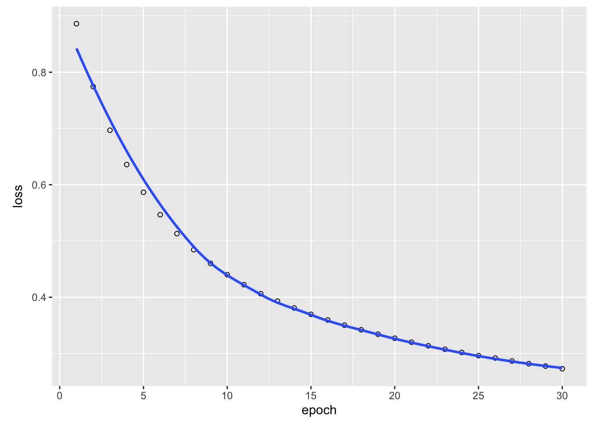
plot(log_losses, xlab = "steps", ylab = "loss", las = 1)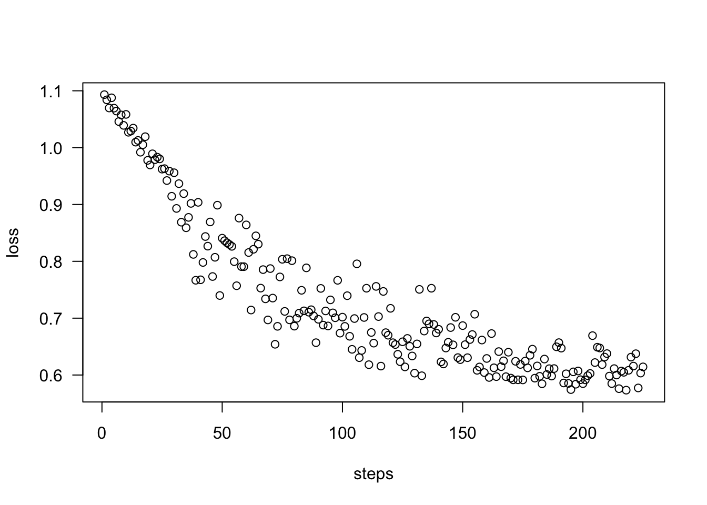
6. Create predictions:
predictions = predict(model, X) # Probabilities for each class.Get probabilities:
head(predictions) # Quasi-probabilities for each species. [,1] [,2] [,3]
[1,] 0.9915600 0.006817889 0.0016221496
[2,] 0.9584184 0.037489697 0.0040918575
[3,] 0.9910416 0.007848956 0.0011094128
[4,] 0.9813542 0.016901711 0.0017440914
[5,] 0.9949830 0.004031503 0.0009855649
[6,] 0.9905725 0.006884387 0.0025430375For each plant, we want to know for which species we got the highest probability:
preds = apply(predictions, 1, which.max)
print(preds) [1] 1 1 1 1 1 1 1 1 1 1 1 1 1 1 1 1 1 1 1 1 1 1 1 1 1 1 1 1 1 1 1 1 1 1 1 1 1
[38] 1 1 1 1 2 1 1 1 1 1 1 1 1 3 3 3 2 2 2 3 2 2 2 2 2 2 2 2 3 2 2 2 2 3 2 2 2
[75] 2 2 2 3 2 2 2 2 2 2 2 3 3 2 2 2 2 2 2 2 2 2 2 2 2 2 3 3 3 3 3 3 2 3 3 3 3
[112] 3 3 3 3 3 3 3 3 2 3 3 3 3 3 3 3 3 3 3 3 3 3 2 2 3 3 3 3 3 3 3 3 3 3 3 3 3
[149] 3 3model_torch$eval()
preds_torch = model_torch(torch_tensor(X))
preds_torch = apply(preds_torch, 1, which.max)
print(preds_torch) [1] 1 1 1 1 1 1 1 1 1 1 1 1 1 1 1 1 1 1 1 1 1 1 1 1 1 1 1 1 1 1 1 1 1 1 1 1 1
[38] 1 1 1 1 1 1 1 1 1 1 1 1 1 2 2 2 2 2 2 2 2 2 2 2 2 2 2 2 2 2 2 2 2 3 2 2 2
[75] 2 2 2 2 2 2 2 2 2 3 2 2 2 2 2 2 2 2 2 2 2 2 2 2 2 2 3 3 3 3 3 3 3 3 3 3 3
[112] 3 3 3 3 3 3 3 3 3 3 3 3 3 3 3 3 3 3 3 3 3 3 2 3 3 3 3 3 3 3 3 3 3 3 3 3 3
[149] 3 37. Calculate Accuracy (how often we have been correct):
mean(preds == as.integer(iris$Species))[1] 0.9066667mean(preds_torch == as.integer(iris$Species))[1] 0.988. Plot predictions, to see if we have done a good job:
oldpar = par(mfrow = c(1, 2))
plot(iris$Sepal.Length, iris$Petal.Length, col = iris$Species,
main = "Observed")
plot(iris$Sepal.Length, iris$Petal.Length, col = preds,
main = "Predicted")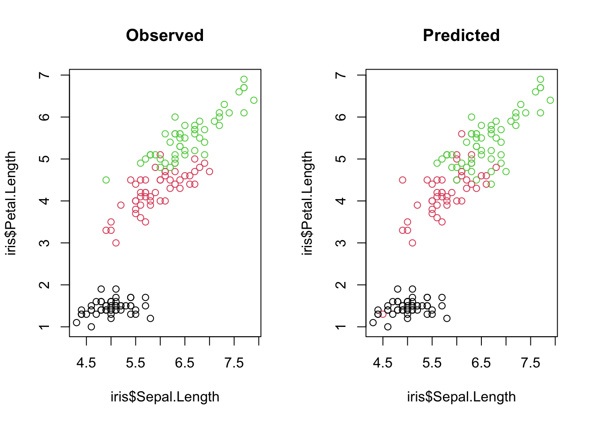
par(oldpar) # Reset par.So you see, building a neural network is very easy with Keras or Torch and you can already do it on your own.
We will now build a regression for the airquality data set with Keras/Torch. We want to predict the variable “Ozone”.
Tasks: 1. Complete the steps and the code chunk so that the model is successfully trained! 2. Try different learning rates and neural network sizes (increase/decrease number of hidden layers and neurons (units) in each layer). What happes?
Keras
library(tensorflow)
library(keras)
set_random_seed(321L, disable_gpu = FALSE) # Already sets R's random seed.
data = airqualityExplore the data with summary() and plot():
summary(data) Ozone Solar.R Wind Temp
Min. : 1.00 Min. : 7.0 Min. : 1.700 Min. :56.00
1st Qu.: 18.00 1st Qu.:115.8 1st Qu.: 7.400 1st Qu.:72.00
Median : 31.50 Median :205.0 Median : 9.700 Median :79.00
Mean : 42.13 Mean :185.9 Mean : 9.958 Mean :77.88
3rd Qu.: 63.25 3rd Qu.:258.8 3rd Qu.:11.500 3rd Qu.:85.00
Max. :168.00 Max. :334.0 Max. :20.700 Max. :97.00
NA's :37 NA's :7
Month Day
Min. :5.000 Min. : 1.0
1st Qu.:6.000 1st Qu.: 8.0
Median :7.000 Median :16.0
Mean :6.993 Mean :15.8
3rd Qu.:8.000 3rd Qu.:23.0
Max. :9.000 Max. :31.0
plot(data)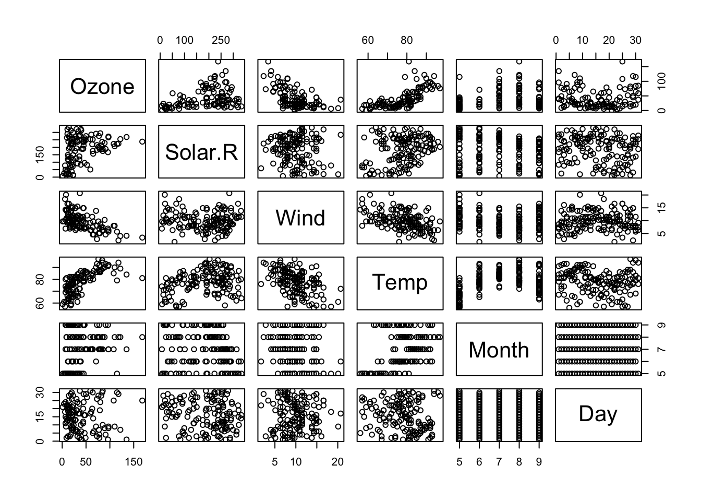
There are NAs in the data, which we have to remove because Keras cannot handle NAs. If you don’t know how to remove NAs from a data.frame, use Google (e.g. with the query: “remove-rows-with-all-or-some-nas-missing-values-in-data-frame”).
Split the data in predictors (\(\boldsymbol{X}\)) and response (\(\boldsymbol{y}\), Ozone) and scale the \(\boldsymbol{X}\) matrix.
Build a sequential Keras model.
Add hidden layers (input and output layer are already specified, you have to add hidden layers between them):
model %>%
layer_dense(units = 20L, activation = "relu", input_shape = list(5L)) %>%
....
layer_dense(units = 1L, activation = "linear")model %>%
compile(loss = loss_mean_squared_error, optimizer_adamax(learning_rate = 0.05))What is the “mean_squared_error” loss?
Tip: Only matrices are accepted for \(\boldsymbol{X}\) and \(\boldsymbol{y}\) by Keras. R often drops a one column matrix into a vector (change it back to a matrix!)
Plot training history.
Create predictions.
Compare your Keras model with a linear model:
fit = lm(Ozone ~ ., data = data)
pred_lm = predict(fit, data)
rmse_lm = mean(sqrt((y - pred_lm)^2))
rmse_keras = mean(sqrt((y - pred_keras)^2))
print(rmse_lm)
print(rmse_keras)Torch
library(torch)
data = airqualityExplore the data with summary() and plot():
summary(data) Ozone Solar.R Wind Temp
Min. : 1.00 Min. : 7.0 Min. : 1.700 Min. :56.00
1st Qu.: 18.00 1st Qu.:115.8 1st Qu.: 7.400 1st Qu.:72.00
Median : 31.50 Median :205.0 Median : 9.700 Median :79.00
Mean : 42.13 Mean :185.9 Mean : 9.958 Mean :77.88
3rd Qu.: 63.25 3rd Qu.:258.8 3rd Qu.:11.500 3rd Qu.:85.00
Max. :168.00 Max. :334.0 Max. :20.700 Max. :97.00
NA's :37 NA's :7
Month Day
Min. :5.000 Min. : 1.0
1st Qu.:6.000 1st Qu.: 8.0
Median :7.000 Median :16.0
Mean :6.993 Mean :15.8
3rd Qu.:8.000 3rd Qu.:23.0
Max. :9.000 Max. :31.0
plot(data)
There are NAs in the data, which we have to remove because Keras cannot handle NAs. If you don’t know how to remove NAs from a data.frame, use Google (e.g. with the query: “remove-rows-with-all-or-some-nas-missing-values-in-data-frame”).
Split the data in predictors (\(\boldsymbol{X}\)) and response (\(\boldsymbol{y}\), Ozone) and scale the \(\boldsymbol{X}\) matrix.
Pass a list of layer objects to a sequential network class of torch (input and output layer are already specified, you have to add hidden layers between them):
model_torch =
nn_sequential(
nn_linear(5L, 20L),
...
nn_linear(20L, 1L),
)We have to pass the network’s parameters to the optimizer (how is this different to keras?)
optimizer_torch = optim_adam(params = model_torch$parameters, lr = 0.05)In torch we have to write the trainings loop on our own. Complete the trainings loop:
Tips:
# Calculate number of training steps.
epochs = ...
batch_size = 32
steps = ...
X_torch = torch_tensor(x)
Y_torch = torch_tensor(y, ...)
# Set model into training status.
model_torch$train()
log_losses = NULL
# Training loop.
for(i in 1:steps){
# Get batch indices.
indices = sample.int(nrow(x), batch_size)
X_batch = ...
Y_batch = ...
# Reset backpropagation.
optimizer_torch$zero_grad()
# Predict and calculate loss.
pred = model_torch(X_batch)
loss = ...
# Backpropagation and weight update.
loss$backward()
optimizer_torch$step()
log_losses[i] = as.numeric(loss)
}Plot training history.
Create predictions.
Compare your Torch model with a linear model:
fit = lm(Ozone ~ ., data = data)
pred_lm = predict(fit, data)
rmse_lm = mean(sqrt((y - pred_lm)^2))
rmse_torch = mean(sqrt((y - pred_torch)^2))
print(rmse_lm)
print(rmse_torch)
data = airquality1. There are NAs in the data, which we have to remove because Keras and Torch cannot handle NAs!
data = data[complete.cases(data),] # Remove NAs.
summary(data) Ozone Solar.R Wind Temp
Min. : 1.0 Min. : 7.0 Min. : 2.30 Min. :57.00
1st Qu.: 18.0 1st Qu.:113.5 1st Qu.: 7.40 1st Qu.:71.00
Median : 31.0 Median :207.0 Median : 9.70 Median :79.00
Mean : 42.1 Mean :184.8 Mean : 9.94 Mean :77.79
3rd Qu.: 62.0 3rd Qu.:255.5 3rd Qu.:11.50 3rd Qu.:84.50
Max. :168.0 Max. :334.0 Max. :20.70 Max. :97.00
Month Day
Min. :5.000 Min. : 1.00
1st Qu.:6.000 1st Qu.: 9.00
Median :7.000 Median :16.00
Mean :7.216 Mean :15.95
3rd Qu.:9.000 3rd Qu.:22.50
Max. :9.000 Max. :31.00 2. Split the data in predictors and response and scale the matrix.
x = scale(data[,2:6])
y = data[,1]Keras
3. Build sequential Keras model.
library(tensorflow)
library(keras)
set_random_seed(321L, disable_gpu = FALSE) # Already sets R's random seed.
model = keras_model_sequential()4. Add hidden layers (input and output layer are already specified, you have to add hidden layers between them).
model %>%
layer_dense(units = 20L, activation = "relu", input_shape = list(5L)) %>%
layer_dense(units = 20L) %>%
layer_dense(units = 20L) %>%
layer_dense(units = 1L, activation = "linear")We use 5L as input shape, because we have 5 predictors. Analogously, we use 1L for our 1d response. Because we do not want any compression, dilation or other nonlinear effects, we use the simple linear layer (equal to no activation function at all). For more about activation functions, look for example here. Or wait for the next days. You may also have seen the previously shown link about activation functions in more detail.
5. Compile model.
model %>%
compile(loss = loss_mean_squared_error, optimizer_adamax(learning_rate = 0.05))The mean_squared_error is the ordinary least squares approach in regression analysis.
6. Fit model.
model_history =
model %>%
fit(x = x, y = matrix(y, ncol = 1L), epochs = 100L,
batch_size = 20L, shuffle = TRUE)7. Plot training history.
plot(model_history)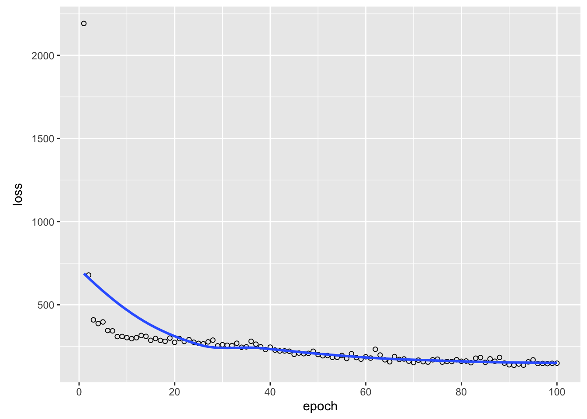
model %>%
evaluate(x, y) loss
147.5745 8. Create predictions.
pred_keras = predict(model, x)9. Compare Keras model with a linear model.
fit = lm(Ozone ~ ., data = data)
pred_lm = predict(fit, data)
rmse_lm = mean(sqrt((y - pred_lm)^2))
rmse_keras = mean(sqrt((y - pred_keras)^2))
print(rmse_lm)[1] 14.78897print(rmse_keras)[1] 9.067499Torch
3. Pass a list of layer objects to a sequential network class of torch (input and output layer are already specified, you have to add hidden layers between them):
library(torch)
model_torch =
nn_sequential(
nn_linear(5L, 20L),
nn_relu(),
nn_linear(20L, 20L),
nn_relu(),
nn_linear(20L, 20L),
nn_relu(),
nn_linear(20L, 1L),
)We use 5L as input shape, because we have 5 predictors. Analogously, we use 1L for our 1d response. Because we do not want any compression, dilation or other nonlinear effects, we use the simple linear layer (equal to no activation function at all). For more about activation functions, look for example here. Or wait for the next days. You may also have seen the previously shown link about activation functions in more detail.
4. Create optimizer
We have to pass the network’s parameters to the optimizer (how is this different to keras?)
optimizer_torch = optim_adam(params = model_torch$parameters, lr = 0.001)In keras we use the compile function to pass a optimizer and a loss function to the model whereas in torch we have to pass the network’s parameters to the optimizer.
5. Fit model
In torch we have to write the trainings loop on our own. Complete the trainings loop:
# Calculate number of training steps.
epochs = 100
batch_size = 32
steps = round(nrow(x)/batch_size*epochs)
X_torch = torch_tensor(x)
Y_torch = torch_tensor(y, dtype = torch_float32())$view(list(-1, 1))
# Set model into training status.
model_torch$train()
log_losses = NULL
# Training loop.
for(i in 1:steps){
# Get batch indices.
indices = sample.int(nrow(x), batch_size)
X_batch = X_torch[indices,]
Y_batch = Y_torch[indices,]
# Reset backpropagation.
optimizer_torch$zero_grad()
# Predict and calculate loss.
pred = model_torch(X_batch)
loss = nnf_mse_loss(pred, Y_batch)
# Backpropagation and weight update.
loss$backward()
optimizer_torch$step()
log_losses[i] = as.numeric(loss)
}6. Plot training history.
plot(y = log_losses, x = 1:steps, xlab = "Epoch", ylab = "MSE")7. Create predictions.
pred_torch = model_torch(X_torch)
pred_torch = as.numeric(pred_torch) # cast torch to R object 8. Compare your Torch model with a linear model:
fit = lm(Ozone ~ ., data = data)
pred_lm = predict(fit, data)
rmse_lm = mean(sqrt((y - pred_lm)^2))
rmse_torch = mean(sqrt((y - pred_torch)^2))
print(rmse_lm)
print(rmse_torch)Look at this slightly more complex model and compare the loss plot and the accuracy in contrast to the former.
Keras
library(tensorflow)
library(keras)
set_random_seed(321L, disable_gpu = FALSE) # Already sets R's random seed.
model = keras_model_sequential()
model %>%
layer_dense(units = 20L, activation = "relu", input_shape = list(5L)) %>%
layer_dense(units = 20L, activation = "relu") %>%
layer_dense(units = 30L, activation = "relu") %>%
layer_dense(units = 20L, activation = "relu") %>%
layer_dense(units = 1L, activation = "linear")
model %>%
compile(loss = loss_mean_squared_error, optimizer_adamax(learning_rate = 0.05))
model_history =
model %>%
fit(x = x, y = matrix(y, ncol = 1L), epochs = 100L,
batch_size = 20L, shuffle = TRUE)
plot(model_history)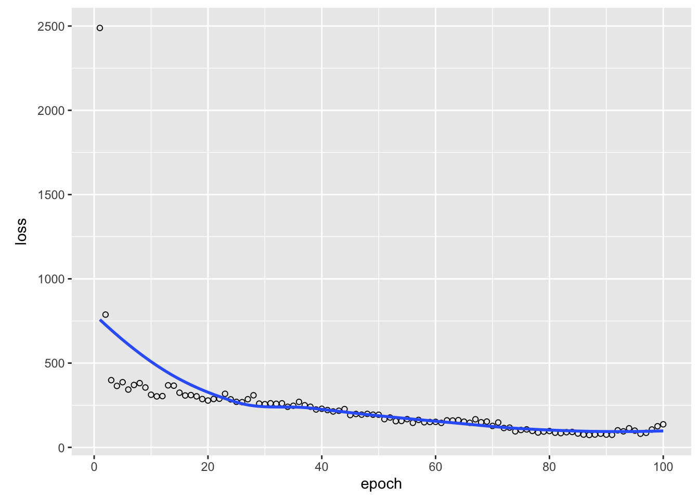
model %>%
evaluate(x, y) loss
210.4453 pred_keras = predict(model, x)
fit = lm(Ozone ~ ., data = data)
pred_lm = predict(fit, data)
rmse_lm = mean(sqrt((y - pred_lm)^2))
rmse_keras = mean(sqrt((y - pred_keras)^2))
print(rmse_lm)[1] 14.78897print(rmse_keras)[1] 10.51122Torch
library(torch)
model_torch =
nn_sequential(
nn_linear(5L, 20L),
nn_relu(),
nn_linear(20L, 20L),
nn_relu(),
nn_linear(20L, 30L),
nn_relu(),
nn_linear(30L, 20L),
nn_relu(),
nn_linear(20L, 1L),
)
optimizer_torch = optim_adam(params = model_torch$parameters, lr = 0.05)
epochs = 100
batch_size = 32
steps = round(nrow(x)/batch_size*epochs)
X_torch = torch_tensor(x)
Y_torch = torch_tensor(y, dtype = torch_float32())$view(list(-1, 1))
model_torch$train()
log_losses = NULL
for(i in 1:steps){
indices = sample.int(nrow(x), batch_size)
X_batch = X_torch[indices,]
Y_batch = Y_torch[indices,]
# Reset backpropagation.
optimizer_torch$zero_grad()
# Predict and calculate loss.
pred = model_torch(X_batch)
loss = nnf_mse_loss(pred, Y_batch)
# Backpropagation and weight update.
loss$backward()
optimizer_torch$step()
log_losses[i] = as.numeric(loss)
}
plot(y = log_losses, x = 1:steps, xlab = "Epoch", ylab = "MSE")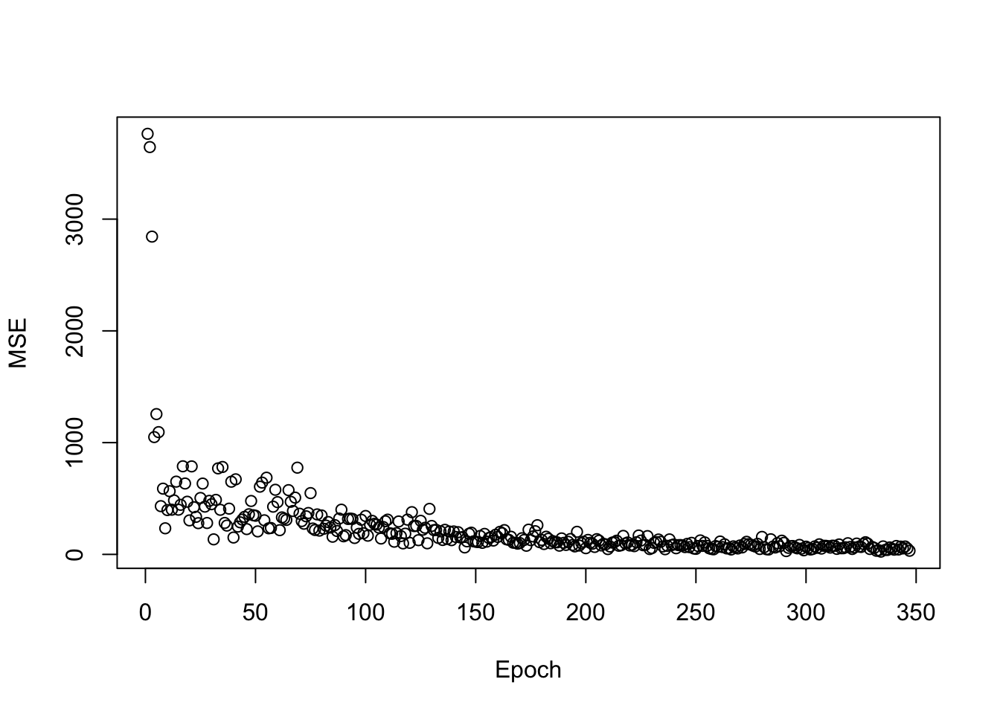
pred_torch = model_torch(X_torch)
pred_torch = as.numeric(pred_torch) # cast torch to R object
fit = lm(Ozone ~ ., data = data)
pred_lm = predict(fit, data)
rmse_lm = mean(sqrt((y - pred_lm)^2))
rmse_torch = mean(sqrt((y - pred_torch)^2))
print(rmse_lm)[1] 14.78897print(rmse_torch)[1] 5.12053You see, the more complex model works better, because it can learn the functional form between the features and the response better (if necessary). But keep the overfitting problem in mind!
Look at the little change in learning rates for the next 2 models and compare the loss plot and the accuracy in contrast to the former.
Keras
library(tensorflow)
library(keras)
set_random_seed(321L, disable_gpu = FALSE) # Already sets R's random seed.
model = keras_model_sequential()
model %>%
layer_dense(units = 20L, activation = "relu", input_shape = list(5L)) %>%
layer_dense(units = 20L, activation = "relu") %>%
layer_dense(units = 30L, activation = "relu") %>%
layer_dense(units = 20L, activation = "relu") %>%
layer_dense(units = 1L, activation = "linear")
model %>%
compile(loss = loss_mean_squared_error, optimizer_adamax(learning_rate = 0.1))
model_history =
model %>%
fit(x = x, y = matrix(y, ncol = 1L), epochs = 100L,
batch_size = 20L, shuffle = TRUE)
plot(model_history)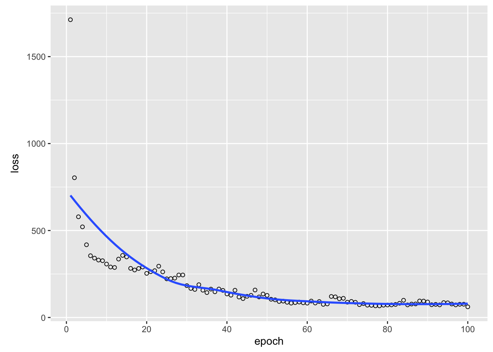
model %>%
evaluate(x, y) loss
56.70872 pred_keras = predict(model, x)
fit = lm(Ozone ~ ., data = data)
pred_lm = predict(fit, data)
rmse_lm = mean(sqrt((y - pred_lm)^2))
rmse_keras = mean(sqrt((y - pred_keras)^2))
print(rmse_lm)[1] 14.78897print(rmse_keras)[1] 5.661808Torch
library(torch)
model_torch =
nn_sequential(
nn_linear(5L, 20L),
nn_relu(),
nn_linear(20L, 20L),
nn_relu(),
nn_linear(20L, 30L),
nn_relu(),
nn_linear(30L, 20L),
nn_relu(),
nn_linear(20L, 1L),
)
optimizer_torch = optim_adam(params = model_torch$parameters, lr = 0.1)
epochs = 100
batch_size = 32
steps = round(nrow(x)/batch_size*epochs)
X_torch = torch_tensor(x)
Y_torch = torch_tensor(y, dtype = torch_float32())$view(list(-1, 1))
model_torch$train()
log_losses = NULL
for(i in 1:steps){
indices = sample.int(nrow(x), batch_size)
X_batch = X_torch[indices,]
Y_batch = Y_torch[indices,]
# Reset backpropagation.
optimizer_torch$zero_grad()
# Predict and calculate loss.
pred = model_torch(X_batch)
loss = nnf_mse_loss(pred, Y_batch)
# Backpropagation and weight update.
loss$backward()
optimizer_torch$step()
log_losses[i] = as.numeric(loss)
}
plot(y = log_losses, x = 1:steps, xlab = "Epoch", ylab = "MSE")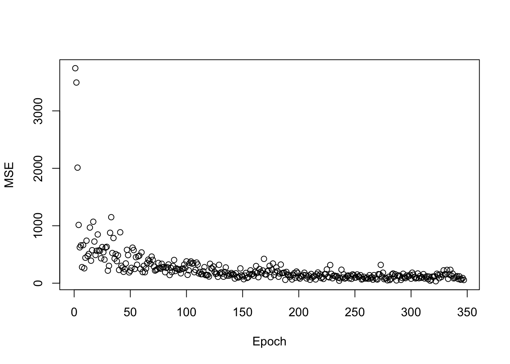
pred_torch = model_torch(X_torch)
pred_torch = as.numeric(pred_torch) # cast torch to R object
fit = lm(Ozone ~ ., data = data)
pred_lm = predict(fit, data)
rmse_lm = mean(sqrt((y - pred_lm)^2))
rmse_torch = mean(sqrt((y - pred_torch)^2))
print(rmse_lm)[1] 14.78897print(rmse_torch)[1] 6.461597You can see, the higher learning rate yields a little bit worse results. The optimum is jumped over.
Keras
library(tensorflow)
library(keras)
set_random_seed(321L, disable_gpu = FALSE) # Already sets R's random seed.
model = keras_model_sequential()
model %>%
layer_dense(units = 20L, activation = "relu", input_shape = list(5L)) %>%
layer_dense(units = 20L, activation = "relu") %>%
layer_dense(units = 30L, activation = "relu") %>%
layer_dense(units = 20L, activation = "relu") %>%
layer_dense(units = 1L, activation = "linear")
model %>%
compile(loss = loss_mean_squared_error, optimizer_adamax(learning_rate = 0.001))
model_history =
model %>%
fit(x = x, y = matrix(y, ncol = 1L), epochs = 100L,
batch_size = 20L, shuffle = TRUE)
plot(model_history)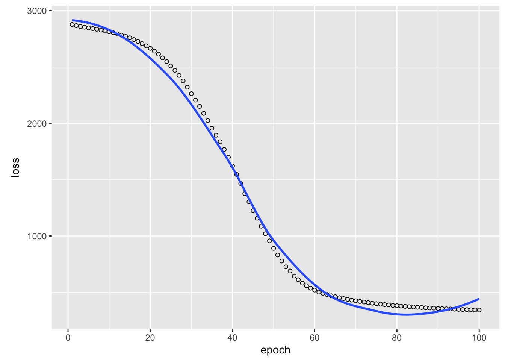
model %>%
evaluate(x, y) loss
340.8205 pred_keras = predict(model, x)
fit = lm(Ozone ~ ., data = data)
pred_lm = predict(fit, data)
rmse_lm = mean(sqrt((y - pred_lm)^2))
rmse_keras = mean(sqrt((y - pred_keras)^2))
print(rmse_lm)[1] 14.78897print(rmse_keras)[1] 13.18632Torch
library(torch)
model_torch =
nn_sequential(
nn_linear(5L, 20L),
nn_relu(),
nn_linear(20L, 20L),
nn_relu(),
nn_linear(20L, 30L),
nn_relu(),
nn_linear(30L, 20L),
nn_relu(),
nn_linear(20L, 1L),
)
optimizer_torch = optim_adam(params = model_torch$parameters, lr = 0.001)
epochs = 100
batch_size = 32
steps = round(nrow(x)/batch_size*epochs)
X_torch = torch_tensor(x)
Y_torch = torch_tensor(y, dtype = torch_float32())$view(list(-1, 1))
model_torch$train()
log_losses = NULL
for(i in 1:steps){
indices = sample.int(nrow(x), batch_size)
X_batch = X_torch[indices,]
Y_batch = Y_torch[indices,]
# Reset backpropagation.
optimizer_torch$zero_grad()
# Predict and calculate loss.
pred = model_torch(X_batch)
loss = nnf_mse_loss(pred, Y_batch)
# Backpropagation and weight update.
loss$backward()
optimizer_torch$step()
log_losses[i] = as.numeric(loss)
}
plot(y = log_losses, x = 1:steps, xlab = "Epoch", ylab = "MSE")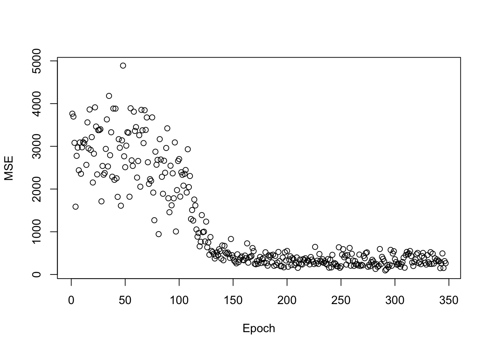
pred_torch = model_torch(X_torch)
pred_torch = as.numeric(pred_torch) # cast torch to R object
fit = lm(Ozone ~ ., data = data)
pred_lm = predict(fit, data)
rmse_lm = mean(sqrt((y - pred_lm)^2))
rmse_torch = mean(sqrt((y - pred_torch)^2))
print(rmse_lm)[1] 14.78897print(rmse_torch)[1] 12.48754You can see, that for the lower learning rate, the optimum (compared to the run with learning rate 0.05) is not yet reached (to few epochs have gone by). But also here, mind the overfitting problem. For too many epochs, things might get worse!
The next task differs for Torch and Keras users. Keras users will learn more about the inner working of training while Torch users will learn how to simplify and generalize the training loop.
Keras
Similar to Torch, here we will write the training loop ourselves in the following. The training loop consists of several steps:
library(tensorflow)
library(keras)
set_random_seed(321L, disable_gpu = FALSE) # Already sets R's random seed.
data = airquality
data = data[complete.cases(data),] # Remove NAs.
x = scale(data[,2:6])
y = data[,1]
layers = tf$keras$layers
model = tf$keras$models$Sequential(
c(
layers$InputLayer(input_shape = list(5L)),
layers$Dense(units = 20L, activation = tf$nn$relu),
layers$Dense(units = 20L, activation = tf$nn$relu),
layers$Dense(units = 20L, activation = tf$nn$relu),
layers$Dense(units = 1L, activation = NULL) # No activation == "linear".
)
)
epochs = 200L
optimizer = tf$keras$optimizers$Adamax(0.01)
# Stochastic gradient optimization is more efficient
# in each optimization step, we use a random subset of the data.
get_batch = function(batch_size = 32L){
indices = sample.int(nrow(x), size = batch_size)
return(list(bX = x[indices,], bY = y[indices]))
}
get_batch() # Try out this function.$bX
Solar.R Wind Temp Month Day
87 -1.13877323 -0.37654514 0.44147123 -0.1467431 1.1546835
117 0.58361881 -1.83815816 0.33653910 0.5319436 1.0398360
129 -1.01809608 1.56290291 0.65133550 1.2106304 -1.1422676
121 0.44100036 -2.14734553 1.70065685 0.5319436 1.4992262
91 0.74817856 -0.71384046 0.54640337 -0.1467431 1.6140738
137 -1.76410028 0.26993754 -0.71278225 1.2106304 -0.2234871
21 -1.93963068 -0.06735777 -1.97196786 -1.5041165 0.5804458
141 -1.73118833 0.10128988 -0.18812157 1.2106304 0.2359031
78 0.97856221 0.10128988 0.44147123 -0.1467431 0.1210555
15 -1.31430363 0.91642022 -2.07689999 -1.5041165 -0.1086396
38 -0.63412333 -0.06735777 0.44147123 -0.8254298 -1.0274200
49 -1.62148183 -0.20789749 -1.34237505 -0.8254298 0.2359031
123 0.03508631 -1.02302783 1.70065685 0.5319436 1.7289213
136 0.58361881 -1.02302783 -0.08318944 1.2106304 -0.3383347
120 0.19964606 -0.06735777 2.01545325 0.5319436 1.3843787
114 -1.63245248 1.22560759 -0.60785011 0.5319436 0.6952933
145 -1.87380678 -0.20789749 -0.71278225 1.2106304 0.6952933
140 0.43002971 1.08506788 -1.13251078 1.2106304 0.1210555
64 0.56167751 -0.20789749 0.33653910 -0.1467431 -1.4868103
118 0.33129386 -0.54519280 0.86119977 0.5319436 1.1546835
128 -0.98518413 -0.71384046 0.96613190 1.2106304 -1.2571152
62 0.92370896 -1.64140257 0.65133550 -0.1467431 -1.7165054
125 0.13382216 -1.36032314 1.49079258 1.2106304 -1.6016578
4 1.40641756 0.43858520 -1.65717146 -1.5041165 -1.3719627
79 1.09923936 -1.02302783 0.65133550 -0.1467431 0.2359031
82 -1.95060133 -0.85438017 -0.39798584 -0.1467431 0.5804458
149 0.08993956 -0.85438017 -0.81771438 1.2106304 1.1546835
17 1.34059366 0.57912491 -1.23744292 -1.5041165 0.1210555
48 1.08826871 3.02451593 -0.60785011 -0.8254298 0.1210555
130 0.73720791 0.26993754 0.23160696 1.2106304 -1.0274200
132 0.49585361 0.26993754 -0.29305371 1.2106304 -0.7977249
30 0.41905906 -1.19167548 0.12667483 -1.5041165 1.6140738
$bY
[1] 20 168 32 118 64 9 1 13 35 18 29 20 85 28 76 9 23 18 32
[20] 73 47 135 78 18 61 16 30 34 37 20 21 115steps = floor(nrow(x)/32) * epochs # We need nrow(x)/32 steps for each epoch.
for(i in 1:steps){
# Get data.
batch = get_batch()
# Transform it into tensors.
bX = tf$constant(batch$bX)
bY = tf$constant(matrix(batch$bY, ncol = 1L))
# Automatic differentiation:
# Record computations with respect to our model variables.
with(tf$GradientTape() %as% tape,
{
pred = model(bX) # We record the operation for our model weights.
loss = tf$reduce_mean(tf$keras$losses$mean_squared_error(bY, pred))
}
)
# Calculate the gradients for our model$weights at the loss / backpropagation.
gradients = tape$gradient(loss, model$weights)
# Update our model weights with the learning rate specified above.
optimizer$apply_gradients(purrr::transpose(list(gradients, model$weights)))
if(! i%%30){
cat("Loss: ", loss$numpy(), "\n") # Print loss every 30 steps (not epochs!).
}
}Loss: 1444.033
Loss: 488.953
Loss: 270.0465
Loss: 450.0282
Loss: 138.2488
Loss: 227.6001
Loss: 216.2361
Loss: 109.9781
Loss: 352.7486
Loss: 239.2065
Loss: 234.0703
Loss: 224.0462
Loss: 227.475
Loss: 336.5538
Loss: 348.1582
Loss: 158.787
Loss: 209.5738
Loss: 321.0661
Loss: 232.6139
Loss: 289.6932 Torch
Keras and Torch use dataloaders to generate the data batches. Dataloaders are objects that return batches of data infinetly. Keras create the dataloader object automatically in the fit function, in Torch we have to write them ourselves:
library(torch)
data = airquality
data = data[complete.cases(data),] # Remove NAs.
x = scale(data[,2:6])
y = matrix(data[,1], ncol = 1L)
torch_dataset = torch::dataset(
name = "airquality",
initialize = function(X,Y) {
self$X = torch::torch_tensor(as.matrix(X), dtype = torch_float32())
self$Y = torch::torch_tensor(as.matrix(Y), dtype = torch_float32())
},
.getitem = function(index) {
x = self$X[index,]
y = self$Y[index,]
list(x, y)
},
.length = function() {
self$Y$size()[[1]]
}
)
dataset = torch_dataset(x,y)
dataloader = torch::dataloader(dataset, batch_size = 30L, shuffle = TRUE)Our dataloader is again an object which has to be initiated. The initiated object returns a list of two elements, batch x and batch y. The initated object stops returning batches when the dataset was completly transversed (no worries, we don’t have to all of this ourselves).
Our training has also changed now:
model_torch = nn_sequential(
nn_linear(5L, 50L),
nn_relu(),
nn_linear(50L, 50L),
nn_relu(),
nn_linear(50L, 50L),
nn_relu(),
nn_linear(50L, 1L)
)
epochs = 50L
opt = optim_adam(model_torch$parameters, 0.01)
train_losses = c()
for(epoch in 1:epochs){
train_loss = c()
coro::loop(
for(batch in dataloader) {
opt$zero_grad()
pred = model_torch(batch[[1]])
loss = nnf_mse_loss(pred, batch[[2]])
loss$backward()
opt$step()
train_loss = c(train_loss, loss$item())
}
)
train_losses = c(train_losses, mean(train_loss))
if(!epoch%%10) cat(sprintf("Loss at epoch %d: %3f\n", epoch, mean(train_loss)))
}Loss at epoch 10: 387.950073
Loss at epoch 20: 282.698288
Loss at epoch 30: 257.855043
Loss at epoch 40: 244.420750
Loss at epoch 50: 217.362108plot(train_losses, type = "o", pch = 15,
col = "darkblue", lty = 1, xlab = "Epoch",
ylab = "Loss", las = 1)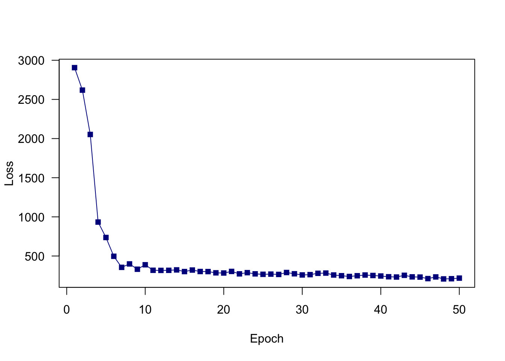
The previous sampling wasn’t ideal, why?
Now change the code from above for the iris data set. Tip: In tf$keras$losses$… you can find various loss functions.
Keras
library(tensorflow)
library(keras)
set_random_seed(321L, disable_gpu = FALSE) # Already sets R's random seed.
x = scale(iris[,1:4])
y = iris[,5]
y = keras::to_categorical(as.integer(Y)-1L, 3)
layers = tf$keras$layers
model = tf$keras$models$Sequential(
c(
layers$InputLayer(input_shape = list(4L)),
layers$Dense(units = 20L, activation = tf$nn$relu),
layers$Dense(units = 20L, activation = tf$nn$relu),
layers$Dense(units = 20L, activation = tf$nn$relu),
layers$Dense(units = 3L, activation = tf$nn$softmax)
)
)
epochs = 200L
optimizer = tf$keras$optimizers$Adamax(0.01)
# Stochastic gradient optimization is more efficient.
get_batch = function(batch_size = 32L){
indices = sample.int(nrow(x), size = batch_size)
return(list(bX = x[indices,], bY = y[indices,]))
}
steps = floor(nrow(x)/32) * epochs # We need nrow(x)/32 steps for each epoch.
for(i in 1:steps){
batch = get_batch()
bX = tf$constant(batch$bX)
bY = tf$constant(batch$bY)
# Automatic differentiation.
with(tf$GradientTape() %as% tape,
{
pred = model(bX) # we record the operation for our model weights
loss = tf$reduce_mean(tf$keras$losses$categorical_crossentropy(bY, pred))
}
)
# Calculate the gradients for the loss at our model$weights / backpropagation.
gradients = tape$gradient(loss, model$weights)
# Update our model weights with the learning rate specified above.
optimizer$apply_gradients(purrr::transpose(list(gradients, model$weights)))
if(! i%%30){
cat("Loss: ", loss$numpy(), "\n") # Print loss every 30 steps (not epochs!).
}
}Loss: 0.002633849
Loss: 0.0005500487
Loss: 0.001006462
Loss: 0.0001315936
Loss: 0.0004843124
Loss: 0.0004023896
Loss: 0.0004356128
Loss: 0.000235351
Loss: 4.823796e-05
Loss: 0.0001512702
Loss: 0.0002624761
Loss: 0.0001274793
Loss: 7.111725e-05
Loss: 0.0001509234
Loss: 0.0002024032
Loss: 0.0001532886
Loss: 9.489701e-05
Loss: 0.0001040314
Loss: 7.334561e-05
Loss: 2.743953e-05
Loss: 9.655961e-05
Loss: 2.361947e-05
Loss: 6.918395e-05
Loss: 1.603245e-05
Loss: 1.772152e-05
Loss: 2.512357e-05 Torch
library(torch)
x = scale(iris[,1:4])
y = iris[,5]
y = as.integer(iris$Species)
torch_dataset = torch::dataset(
name = "iris",
initialize = function(X,Y) {
self$X = torch::torch_tensor(as.matrix(X), dtype = torch_float32())
self$Y = torch::torch_tensor(Y, dtype = torch_long())
},
.getitem = function(index) {
x = self$X[index,]
y = self$Y[index]
list(x, y)
},
.length = function() {
self$Y$size()[[1]]
}
)
dataset = torch_dataset(x,y)
dataloader = torch::dataloader(dataset, batch_size = 30L, shuffle = TRUE)
model_torch = nn_sequential(
nn_linear(4L, 50L),
nn_relu(),
nn_linear(50L, 50L),
nn_relu(),
nn_linear(50L, 50L),
nn_relu(),
nn_linear(50L, 3L)
)
epochs = 50L
opt = optim_adam(model_torch$parameters, 0.01)
train_losses = c()
for(epoch in 1:epochs){
train_loss
coro::loop(
for(batch in dataloader) {
opt$zero_grad()
pred = model_torch(batch[[1]])
loss = nnf_cross_entropy(pred, batch[[2]])
loss$backward()
opt$step()
train_loss = c(train_loss, loss$item())
}
)
train_losses = c(train_losses, mean(train_loss))
if(!epoch%%10) cat(sprintf("Loss at epoch %d: %3f\n", epoch, mean(train_loss)))
}Loss at epoch 10: 16.298814
Loss at epoch 20: 8.492696
Loss at epoch 30: 5.744957
Loss at epoch 40: 4.344102
Loss at epoch 50: 3.493563plot(train_losses, type = "o", pch = 15,
col = "darkblue", lty = 1, xlab = "Epoch",
ylab = "Loss", las = 1)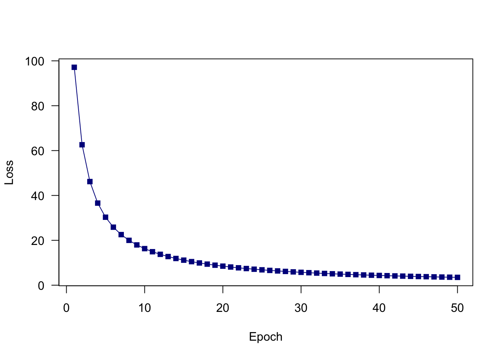
Remarks:
If are not yet familiar with the underlying concepts of neural networks and want to know more about that, it is suggested to read / view the following videos / sites. Consider the Links and videos with descriptions in parentheses as optional bonus.
This might be useful to understand the further concepts in more depth.
(https://en.wikipedia.org/wiki/Newton%27s_method#Description (Especially the animated graphic is interesting).)
Activation functions in detail (requires the above as prerequisite).
Videos about the topic:
Depending on activation functions, it might occur that the network won’t get updated, even with high learning rates (called vanishing gradient, especially for “sigmoid” functions). Furthermore, updates might overshoot (called exploding gradients) or activation functions will result in many zeros (especially for “relu”, dying relu).
In general, the first layers of a network tend to learn (much) more slowly than subsequent ones.